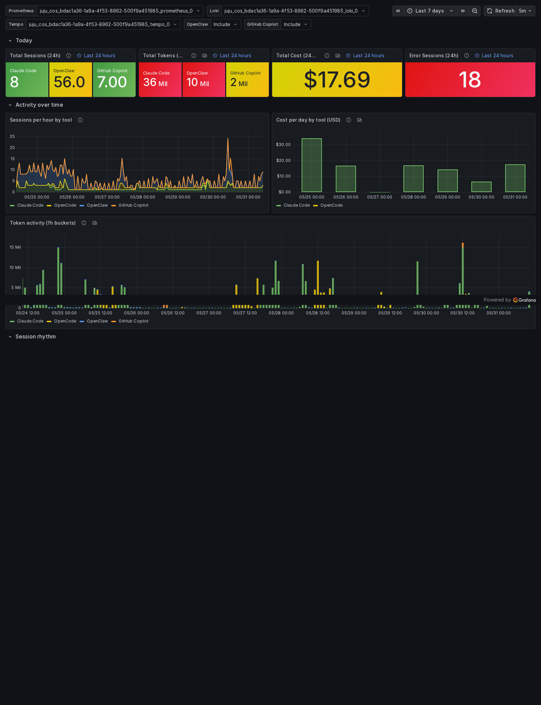

Observing Agents
Devoxx Poland 2026 — Mateusz Kulewicz
How much do you actually know about what your coding agents are doing? This talk instruments Claude Code, OpenClaw, GitHub Copilot, and Ollama with OpenTelemetry, ships their telemetry to a self-hosted observability stack, and shows what the data reveals about cost, latency, and tool behaviour in real daily use.
What's here
- Slides
- The presentation deck. Navigate with arrow keys or the on-screen controls. Press S for speaker notes, F for fullscreen.
- Docs
- Step-by-step setup guides: how to enable OpenTelemetry export for each tool and point it at the Canonical Observability Stack (COS) or any OTLP-compatible backend.
- Dashboards
-
Grafana dashboard JSON files for each tool — overview, per-agent
detail, token usage, latency histograms. Deploy them by pointing
cos-configuration-k8sat this repository.
Stack
- Agents: Claude Code, OpenClaw, GitHub Copilot, Ollama
- Telemetry: OpenTelemetry (metrics, traces, logs)
- Backend: Canonical Observability Stack on Juju / Kubernetes
(Prometheus · Loki · Tempo · Grafana)
